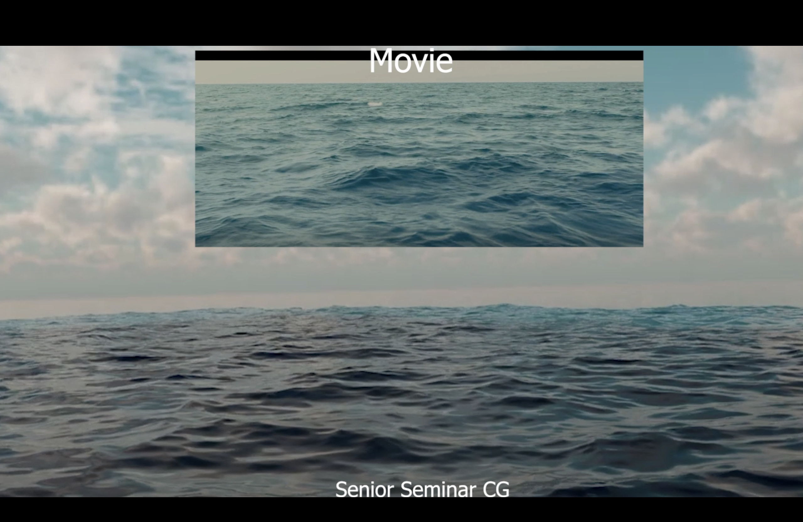

Animation, Lighting and Compositing
Brian Ye
Brian Ye Resume
Im a senior at the University of Texas at Dallas and I major in film CG creation. My goal is to demonstrate an advanced understanding with animation and composition using Maya and Houdini to help me and others look deeper into the art of VFX.
Education
- University of Texas at Dallas (2021-2026)
- Plano West Computer Science Club Tournament
Specialties Mastered
- Animation
- Rigging
- Modeling
- Texturing
- Compositing
- Editing
- Matte Painting
Employment
- Spring Creek Tax Services
Softwares Used
- Autodesk Maya
- Adobe Substance Painter, Premiere, and PS
- Speedtree
- Nuke
- Houdini
- Blender
- Vray, Redshift, Arnold Render Engines
Business Email
Message the
Work Email
to learn more about the framework and pipeline for CG and Marketing.
University

CG Work Demo
